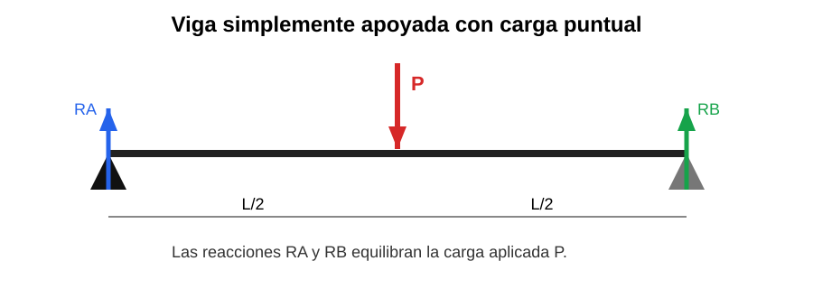

Capacidad: Aplica condiciones de equilibrio en el plano. Analiza vínculos y calcula reacciones en apoyos de estructuras simples.
Propósito: Aplicar condiciones de equilibrio para interpretar apoyos y reacciones en estructuras simples.
Una estructura está en equilibrio cuando la suma de fuerzas y la suma de momentos es igual a cero. Los apoyos o vínculos generan reacciones que compensan las cargas aplicadas.

Explicación del gráfico: la carga P actúa hacia abajo y las reacciones RA y RB hacia arriba. Sin estas reacciones la viga no podría mantenerse en equilibrio.
| Apoyo | Característica |
|---|---|
| Móvil | Permite cierto desplazamiento |
| Fijo | Restringe más movimientos |
| Empotramiento | Resiste desplazamiento y giro |